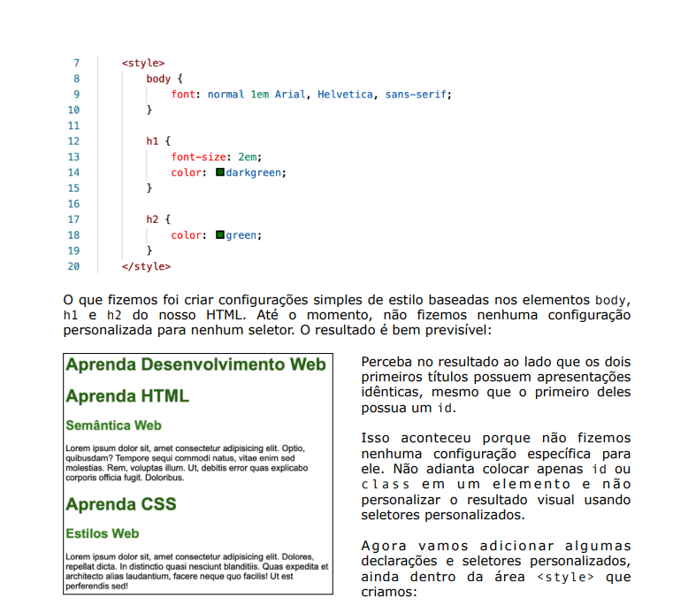
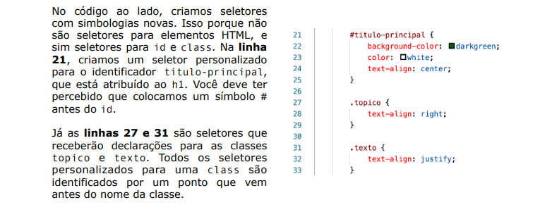
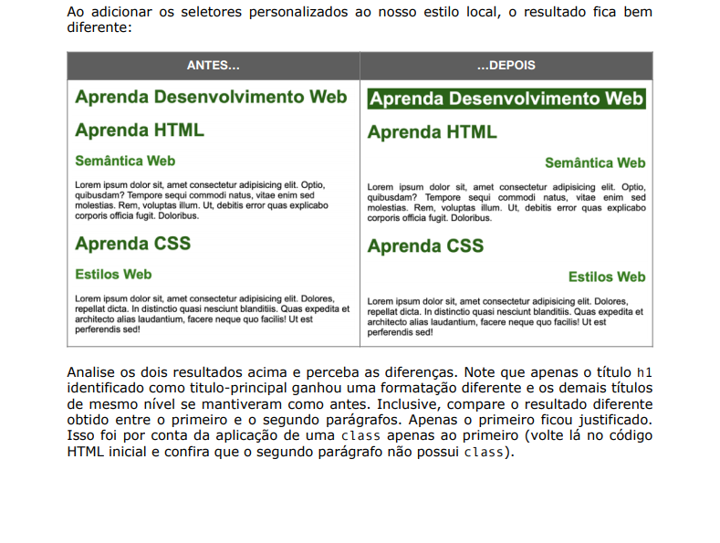
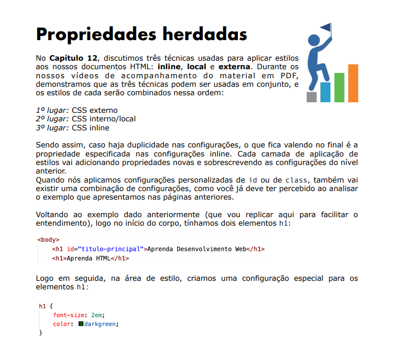
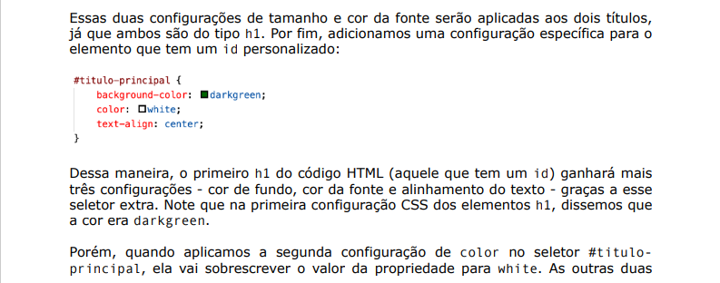
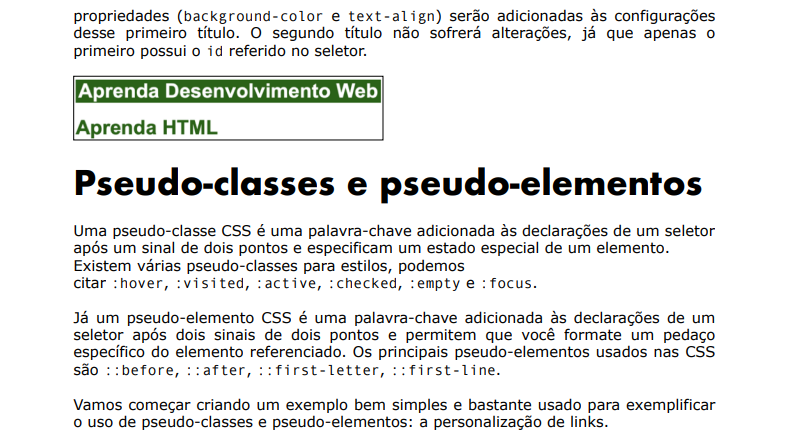
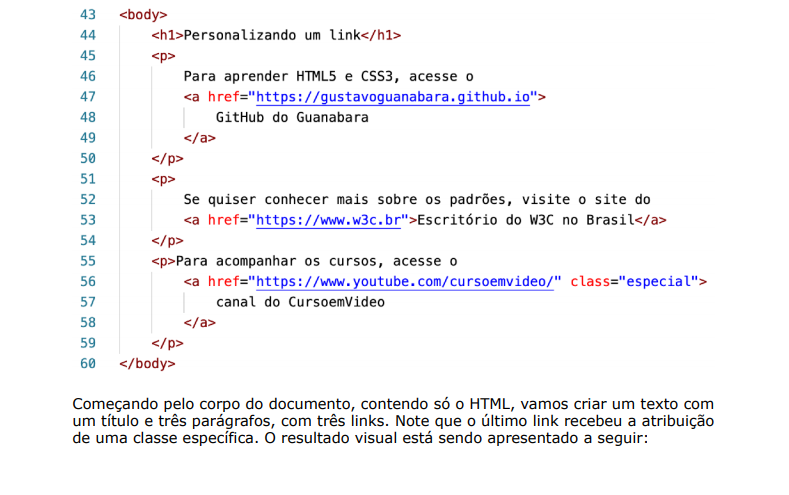
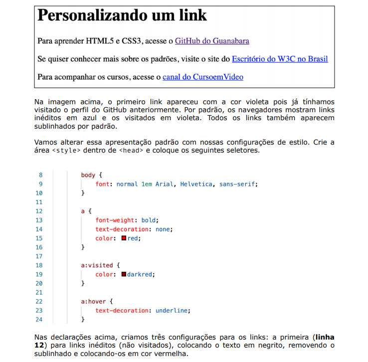
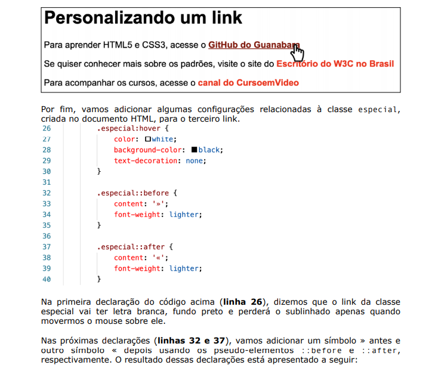
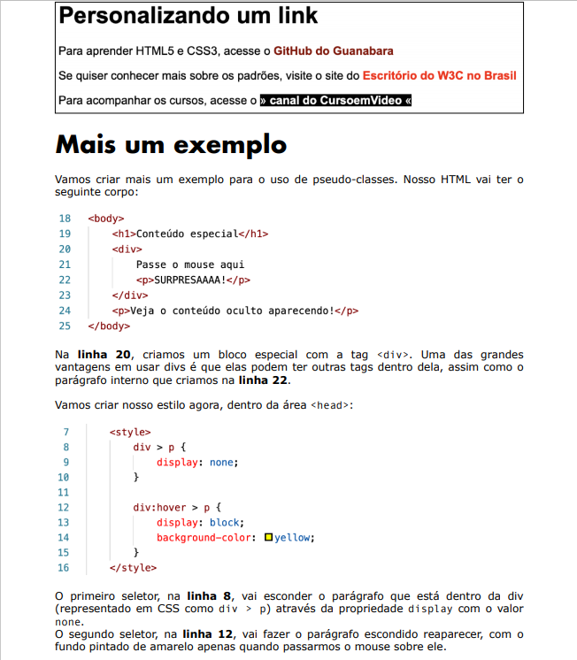

No segundo seletor para links (linha 18), configuramos as âncoras já visitadas (com a pseudo-classe :visited). Nele, apenas mudamos a cor para vermelho escuro. Já na terceira declaração (linha 22), fizemos configurações para todos os links, quando passarmos o mouse por cima (pseudo-classe :hover) e o sublinhado volta a aparecer. O resultado visual está apresentado abaixo, compare com o resultado anterior e veja as diferenças:

